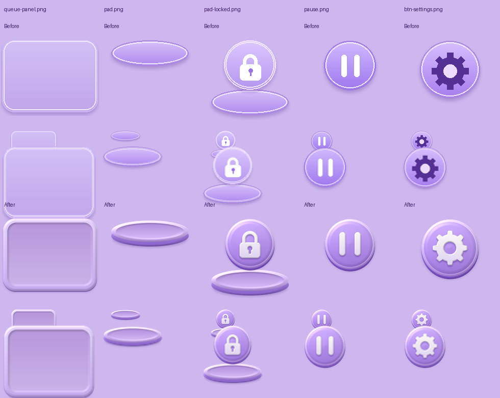
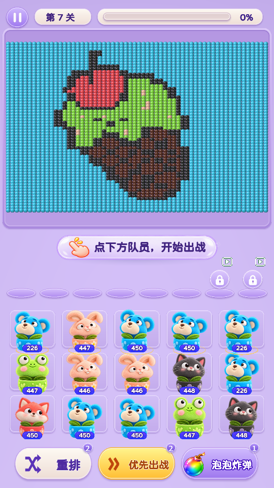

卡槽与设置按钮 · 质感调整
卡槽增加圆润凹面、底座侧壁和柔和投影；设置齿轮、暂停、锁定按钮统一为浮雕质感。保留毛绒角色、卡槽水平位置及点击区域。
试玩第 3 关 · 查看首页设置按钮
素材对照：上方修改前，下方修改后

游戏画面 · 540 × 960
修改前
修改后
角色入槽与首页设置
长屏比例 · 390 × 844
本地 WebGL 构建：2026-10-23 18:18:05。截图来自独立浏览器测试，两种视口均检查解锁、入槽、暂停、设置开关及关闭。